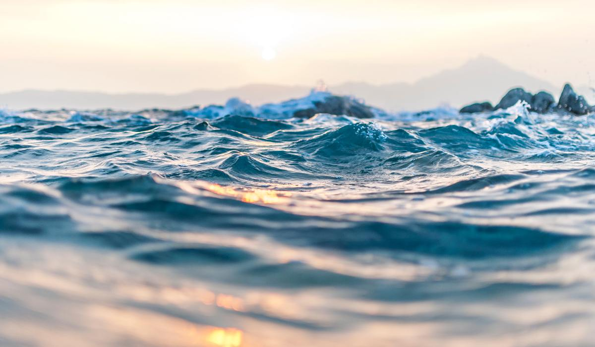
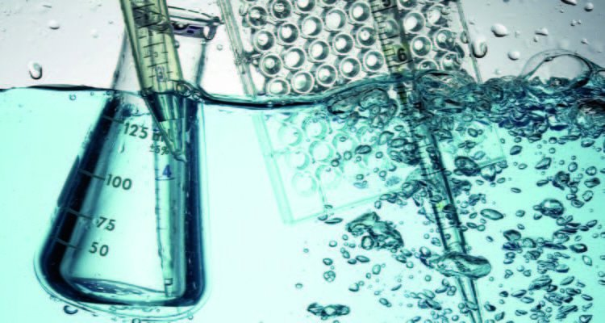
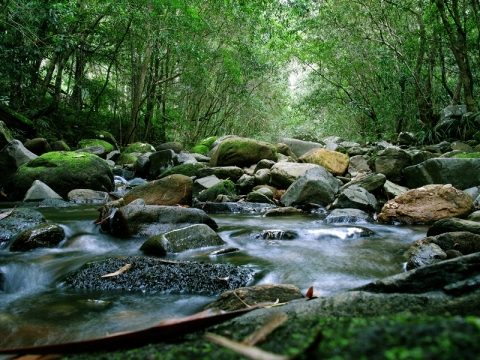

Aqui podremos generar varios reportes generados desde la base de datos
ETC ETC ETC...
| REPORTE 1 | Este reporte me permite realizar busquedas por Tipo de Criterio |
click aqui!!! |  |
| REPORTE 2 | Este reporte me permite realizar busquedas por Criterio de Calidad De Agua |
click aqui!!! |  |
| REPORTE 3 | Este reporte me permite realizar busquedas por Parametros de Medicion |
click aqui!!! |  |
| REPORTE 4 | Este reporte me permite realizar busquedas por Medicion de Calidad del Agua |
click aqui!!! |  |
| REPORTE 5 | Este reporte me permite realizar busquedas por Rios |
click aqui!!! |  |